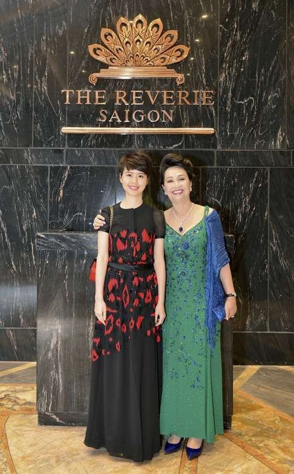
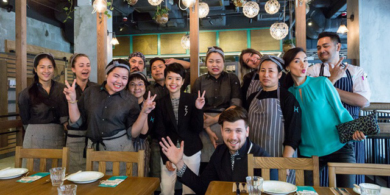
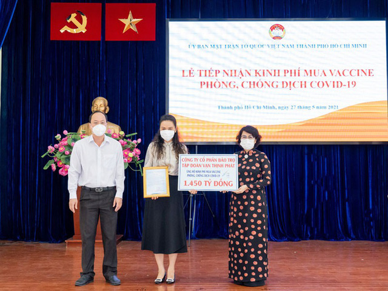

Hai ái nữ siêu kín tiếng của gia tộc sở hữu Thuận Kiều Plaza Đều là chủ tịch khi mới ngoài 20 tuổi
11-07-2021 - 12:00 PM |
SốngBà Trương Mỹ Lan - chủ sở hữu Thuận Kiều Plaza
Thuận Kiều Plaza tiếp tục trở thành từ khoá được netizen tìm kiếm nhiều nhất trên MXH hiện nay. Toà nhà nổi tiếng này đã được trưng dụng làm Bệnh viện dã chiến thu dung số 5 điều trị COVID-19.
Đương nhiên mọi thông tin liên quan đến địa điểm này nhanh chóng lọt vào tầm ngắm của các "thám tử" mạng, trong đó có cả 2 ái nữ của bà Trương Mỹ Lan - Chủ tịch Tập đoàn Vạn Thịnh Phát, tức chủ sở hữu Thuận Kiều Plaza.
Nếu như thông tin về bà Trương Mỹ Lan hiếm hoi một thì 2 cô con gái càng kín kẽ gấp 2, 3 lần. Được biết, bà Mỹ Lan sau khi kết hôn với ông Eric Chu Nap-Kee - doanh nhân người Hongkong thì có được 2 ái nữ là Chu Duyệt Hằng và Chu Duyệt Phấn (được cho là lần lượt sinh năm 1994 và 1995).
Trong 2 người, Chu Duyệt Hằng xuất hiện trên truyền thông nhiều hơn. Theo đó, cô từng theo học ĐH Hongkong ngành Hành chính công.
Chu Duyệt Hằng và bà Trương Mỹ Lan
Tuy nhiên với niềm đam mê ẩm thực, ái nữ nhà họ Chu trở thành Chủ tịch của ZS Hospitality Group từ năm 22 tuổi. Công ty này đặt trụ sở ở Hongkong và sở hữu chuỗi 5 thương hiệu nhà hàng châu Á gồm: Ying Jee Club, Whey, Hansik Goo, J.A.M, Miss Lee. Năm 2017, cô lập nên công ty Capital Advance Limited, đặt cùng trụ sở với ZS Group và giữ chức CEO đến nay.
Chu Duyệt Hằng (áo đen, đứng giữa) trong ngày khai trương một nhà hàng
Về phần Chu Duyệt Phấn, rich kid này gần như không công khai bất cứ thông tin cá nhân nào, bao gồm cả hình ảnh. Mọi đề cập đến Duyệt Phấn đều liên quan đến công việc kinh doanh của Vạn Thịnh Phát.
Mới đây nhất chính là thông tin Công ty Cổ phần Bảo trợ Tập đoàn Vạn Thịnh Phát (thuộc Vạn Thịnh Phát Group) ủng hộ 1.450 tỷ đồng cho Quỹ vaccine phòng dịch Covid-19. Chu Duyệt Phấn chính là Tổng giám đốc công ty này. Được biết công ty này được thành lập cuối tháng 10/2020, ngành nghề chính là kinh doanh bất động sản và có số vốn điều lệ lên tới 8.800 tỷ đồng.
Công ty Cổ phần Bảo trợ Tập đoàn Vạn Thịnh Phát do Chu Duyệt Phấn làm TGĐ ủng hộ 1.450 tỷ đồng cho Quỹ vaccine phòng dịch Covid-19
Trước đó, vào cuối năm 2015, Chu Duyệt Phấn cũng trở thành tâm điểm truyền thông với vụ "thâu tóm" căn biệt thự cổ 3 mặt đường Nguyễn Thị Diệu, Bà Huyện Thanh Quan và Võ Văn Tần với giá trị 35 triệu USD (khoảng 805 tỷ VND tính theo tỷ giá hiện tại). Chính xác, đơn vị đứng ra mua biệt thự này là CTCP Minerva (thuộc Vạn Thịnh Phát Group) và một trong 3 cổ đông sáng lập của Minerva là Chu Duyệt Phấn với 80% cổ phần.